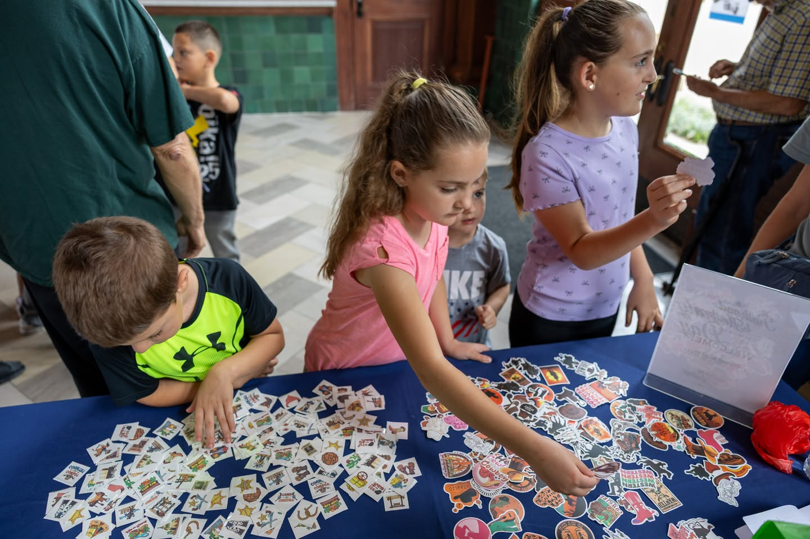

What's Happening
From members-only First Fridays to school field trips and community festivals — there's always something happening at the depot.
Upcoming Events
First Friday · July 4, 2026
An exclusive evening at the depot for museum members. Enjoy early access to the galleries, light refreshments, and a curator meet-and-greet.
Members OnlyAugust 2–27, 2026
Join us for the opening of our newest rotating exhibit exploring how industrialization transformed the American home. Light refreshments served.
Free with AdmissionOngoing · Tue–Sat
Curriculum-aligned tours for K–12 groups. Explore the depot, examine real artifacts, and discover how Temple's founding shaped Central Texas history.
Book in AdvanceFull events calendar — Google Calendar or Eventbrite embed goes here
Year-Round
Standards-aligned programming for elementary through high school groups. Tours include a guided walk through the exhibits, interactive stations, and hands-on activities connected to Texas history curriculum.
Book a Group TourEach first Friday of the month is reserved for museum members — a special evening with early gallery access, rotating programming, and the chance to explore the depot after hours.
Become a MemberTrain Day, Gallery Nights, holiday events, and special community festivals bring the people of Temple together around the history that connects us all. Many events are free and open to the public.
Get Event AlertsThe museum holds one of the country's most significant collections of Santa Fe Railway records, photographs, and documents. Researchers can access the archive by appointment.
Contact UsGet Involved
Volunteers are the backbone of what we do. From leading tours to staffing events, supporting the gift shop, and helping with community outreach — there's a role for everyone who wants to give back to Temple's history.
We manage volunteers through the VOMO platform, which makes scheduling easy and flexible. Whether you can give one Saturday a month or want a regular role, we'd love to have you.
Sign Up to Volunteer